Wir bieten Zahnkorrekturen für Kinder, Jugendliche und Erwachsene – von klassischen Zahnspangen bis zu unsichtbaren Alignern.
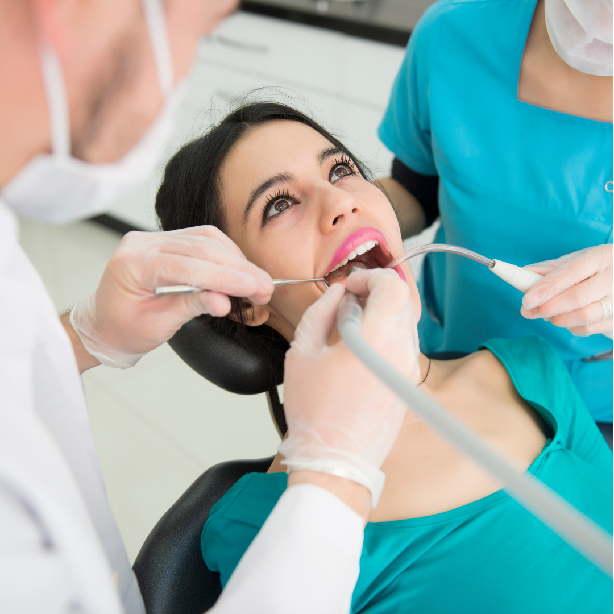
Ihre Praxis in Wien 1200
Dr. med. dent. Manish Sablania
BDS M.Sc. Specialized Orthodontics
Digitale Diagnostik und schonende Behandlungsmethoden.
Spezialisiert auf Prävention, Therapie und Ästhetik.
Kurze Wartezeiten und flexible Zeiten für Berufstätige.
Gut erreichbar mit öffentlichen Verkehrsmitteln und Parkmöglichkeiten.
Herzlich willkommen in unserer Zahnarztpraxis im 20. Wiener Gemeindebezirk, wo wir uns leidenschaftlich um Ihre Zahngesundheit kümmern. Als erfahrener Zahnarzt Wien 1200 und Fachzahnarzt für Kieferorthopädie steht Ihnen Dr. Manish Sablania zur Verfügung und bietet Ihnen die bestmögliche zahnärztliche Versorgung. Bei uns stehen Sie als Patient im Mittelpunkt, und wir legen großen Wert darauf, Ihnen eine angenehme und komfortable Erfahrung zu bieten.
Unsere Praxis als Zahnarzt Wien 1200 bietet ein breites Spektrum an zahnärztlichen Leistungen an, um alle Ihre Bedürfnisse abzudecken. Von der allgemeinen Zahnheilkunde – etwa professioneller Mundhygiene und Untersuchung – bis hin zu spezialisierten Bereichen wie ästhetischen Zahnfüllungen, Zahnbleaching, Kieferorthopädie, Implantat, unsichtbarer Zahnspange und Invisalign: Dr. med. dent. Manish Sablania ist für Sie da. Unsere Zahnarztpraxis in 1200 Wien setzt auf fortschrittliche Technologien und bewährte Behandlungsmethoden für eine hochwertige und effektive Versorgung.
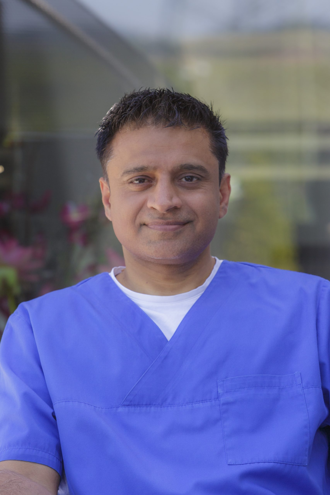
Von der allgemeinen Zahnheilkunde bis Kieferorthopädie und Implantologie – übersichtlich und verständlich erklärt.
Wir bieten ein breites Spektrum an zahnärztlichen Leistungen, um alle Ihre Bedürfnisse abzudecken.
Eine Zahnspange korrigiert Zahnfehlstellungen und sorgt für ein gerades Lächeln. Sie übt sanften Druck auf die Zähne aus, um sie in die richtige Position zu bringen – für Kinder und Erwachsene geeignet.
Mehr lesen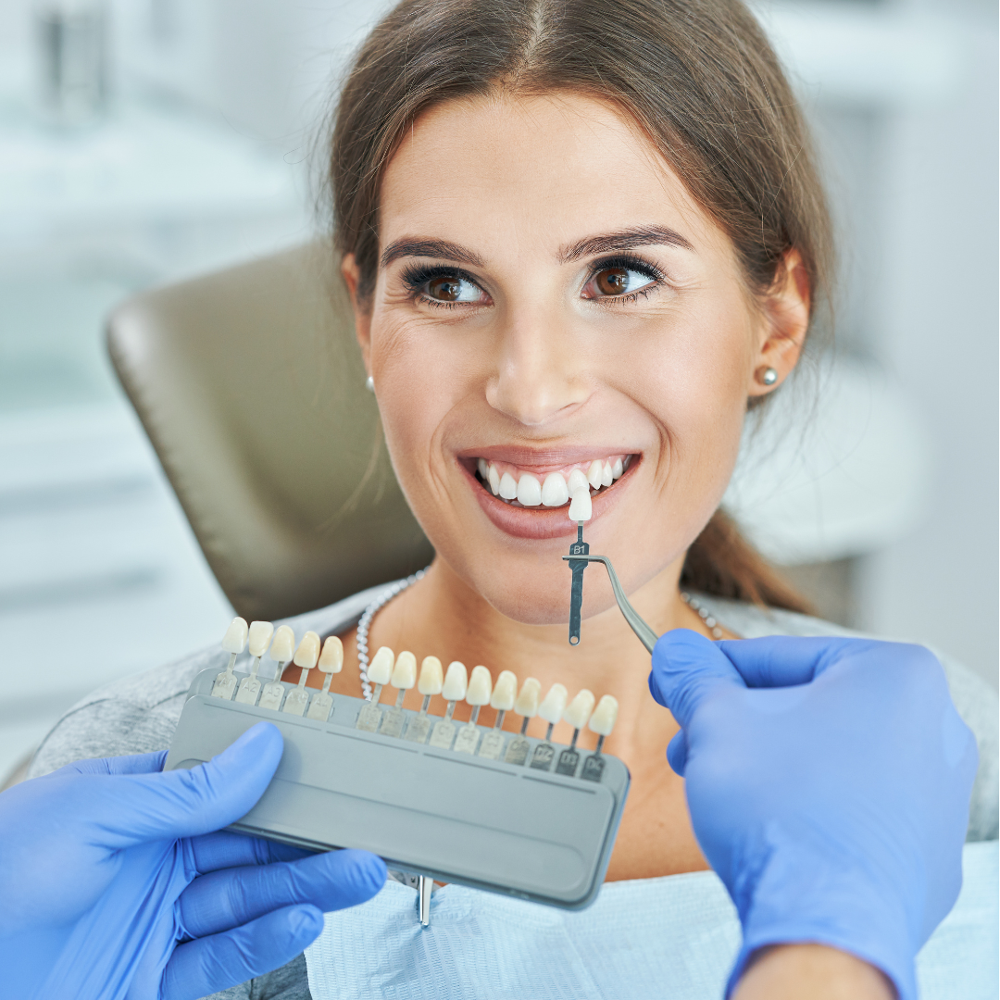
ÄsthetikZahnbleaching hellt verfärbte Zähne auf und sorgt für ein strahlenderes Lächeln. Die Behandlung ist schnell, sicher und bringt beeindruckende Ergebnisse.
Mehr lesen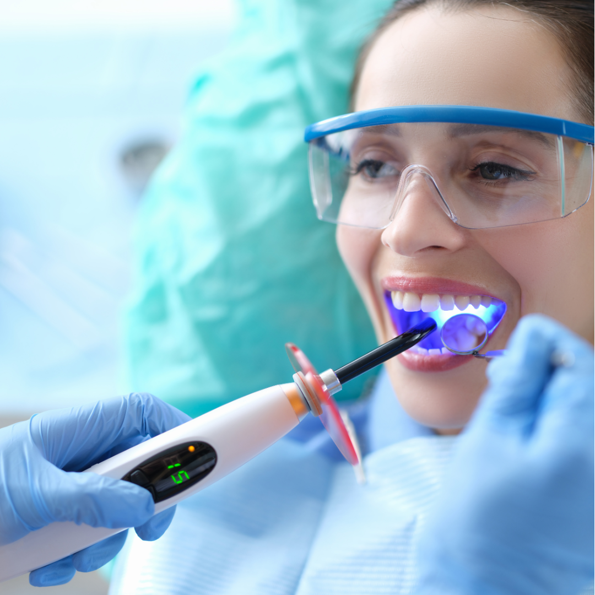
ProphylaxeProfessionelle Mundhygiene entfernt hartnäckige Beläge und Zahnstein, schützt vor Karies und Parodontitis und sorgt für ein frisches, sauberes Mundgefühl.
Mehr lesen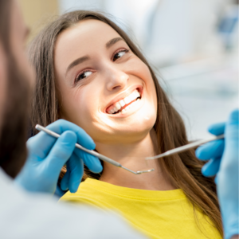
TherapieDie myofunktionelle Therapie trainiert die Gesichtsmuskulatur und unterstützt eine korrekte Zungen- und Lippenfunktion. Sie kann dabei helfen, Kiefer- und Zahnfehlstellungen günstig zu beeinflussen.
Mehr lesen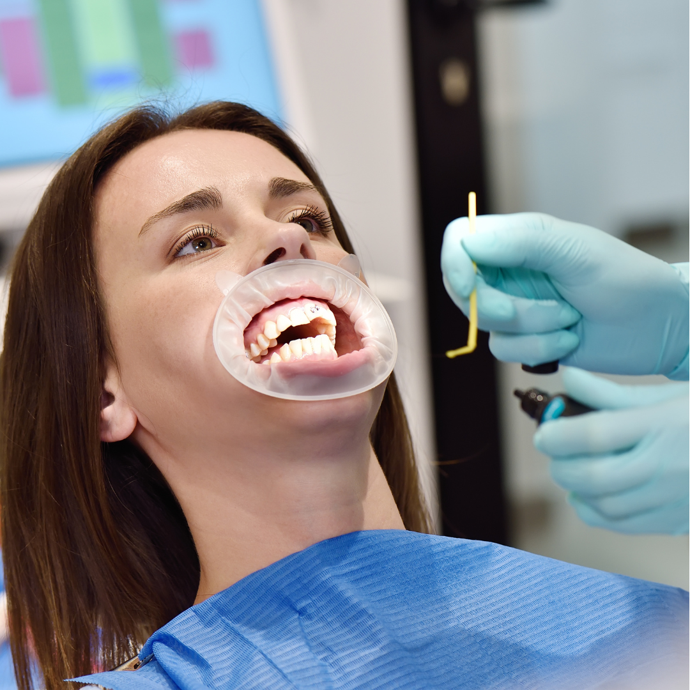
ÄsthetikÄsthetische Zahnfüllungen reparieren kariöse Zähne und passen sich farblich perfekt an das natürliche Zahnmaterial an. Sie bieten eine unauffällige und langlebige Lösung für ein schönes Lächeln.
Mehr lesen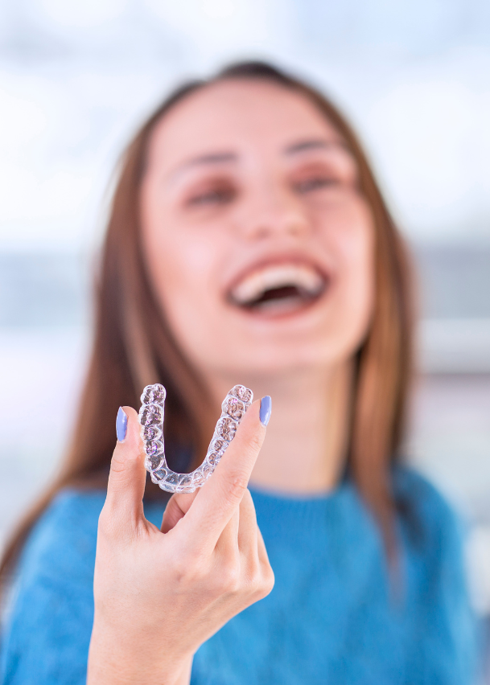
UnsichtbarInvisalign ist eine nahezu unsichtbare Zahnschiene, die Zahnfehlstellungen sanft und diskret korrigiert. Die Schiene ist herausnehmbar und ermöglicht eine komfortable Behandlung für ein schönes, gerades Lächeln.
Mehr lesen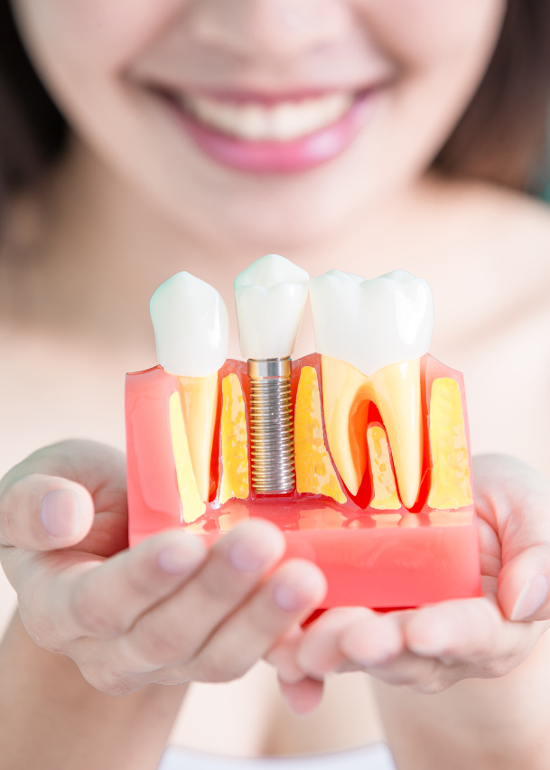
ImplantologieEin Zahnimplantat ersetzt fehlende Zähne dauerhaft und fühlt sich an wie ein natürlicher Zahn. Es wird fest im Kiefer verankert und bietet Stabilität, Komfort und eine ästhetische Lösung für ein vollwertiges Lächeln.
Mehr lesen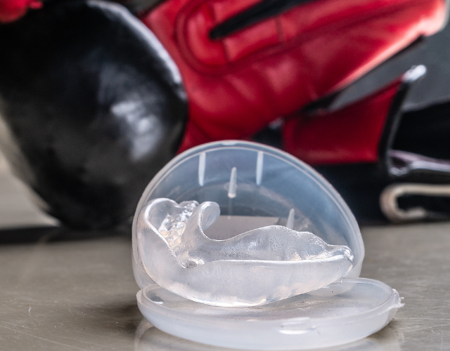
SchutzEin Sportmundschutz schützt Zähne und Kiefer vor Verletzungen bei sportlichen Aktivitäten. Individuell angepasst, bietet er hohen Tragekomfort und maximale Sicherheit für Sportler jeden Alters.
Mehr lesen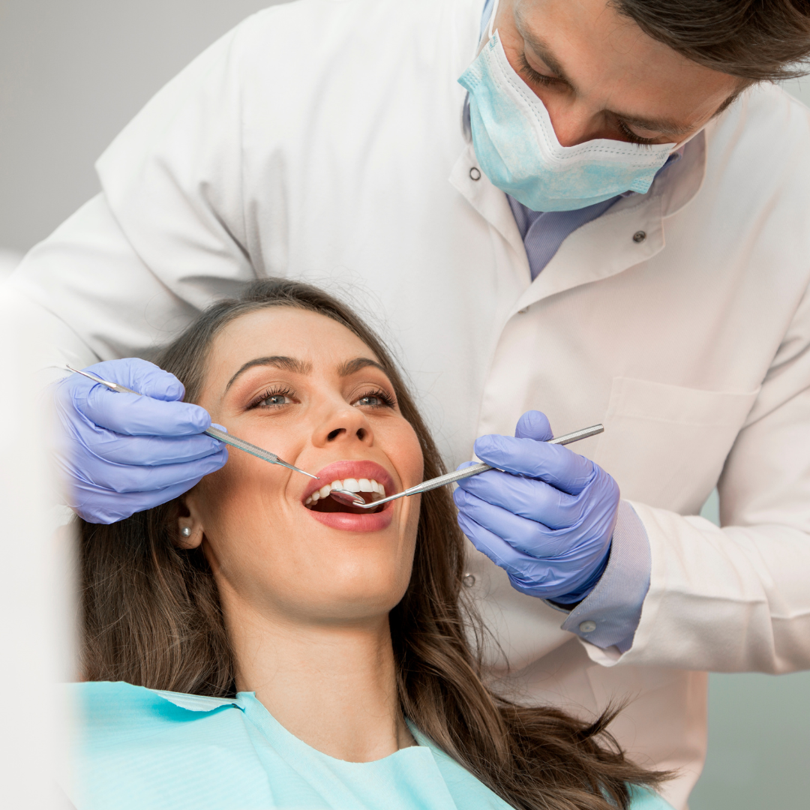
ZahnersatzKronen und Brücken ersetzen beschädigte oder fehlende Zähne und stellen Funktion und Ästhetik des Gebisses wieder her. Sie sind langlebig, stabil und werden farblich an die natürlichen Zähne angepasst.
Mehr lesen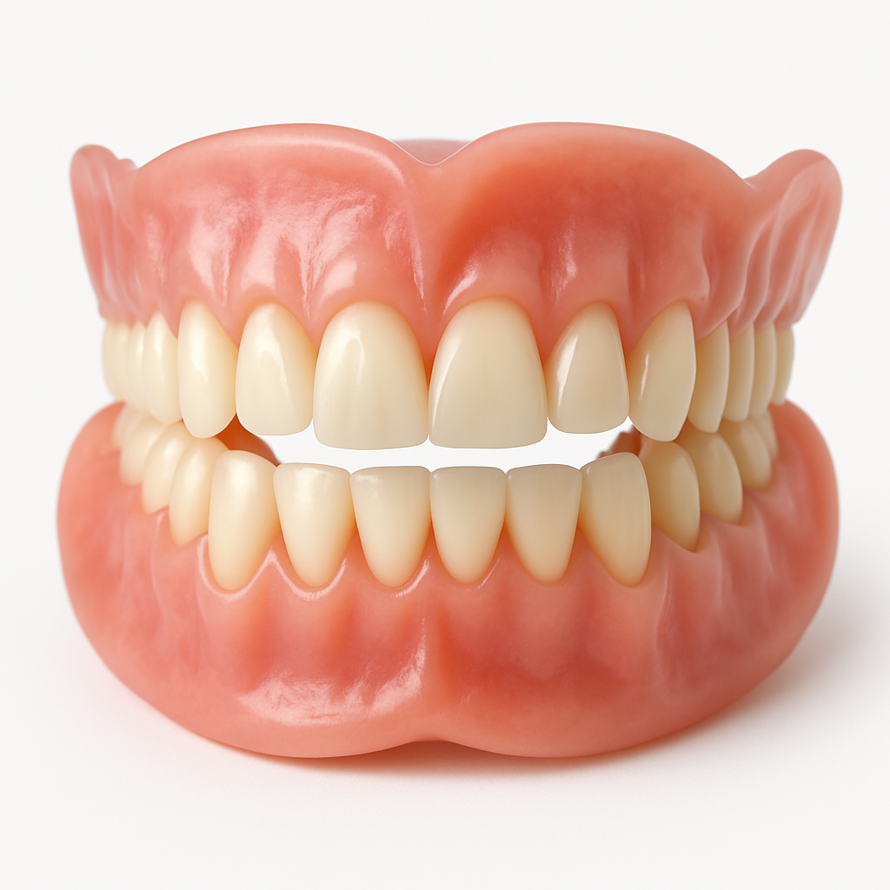
ZahnersatzVollprothesen werden verwendet, wenn alle Zähne im Ober- oder Unterkiefer fehlen.
Mehr lesen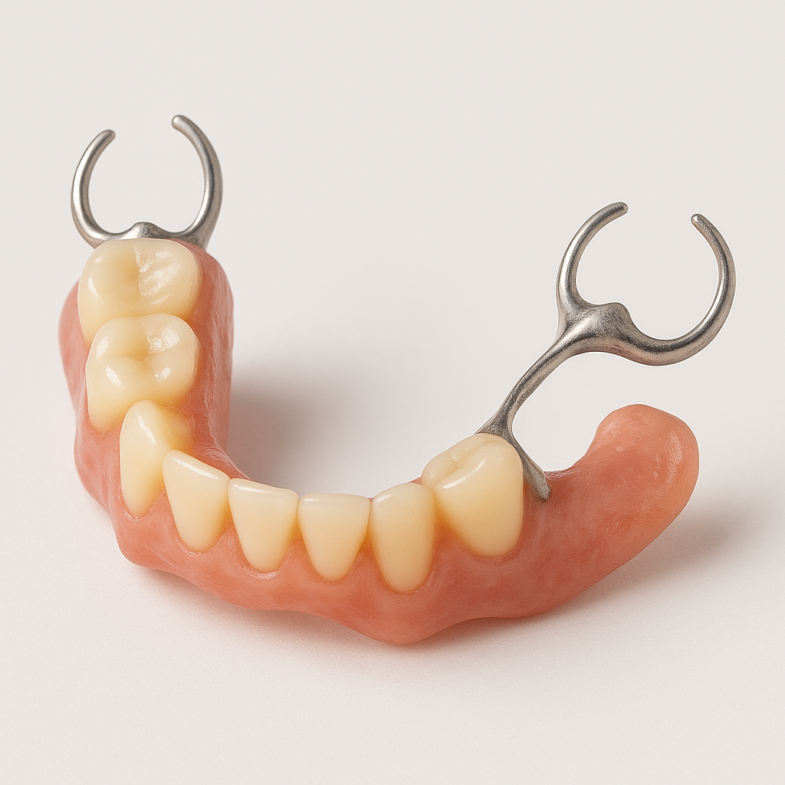
ZahnersatzTeilprothesen eignen sich für Patienten, die noch über natürliche Zähne verfügen.
Mehr lesen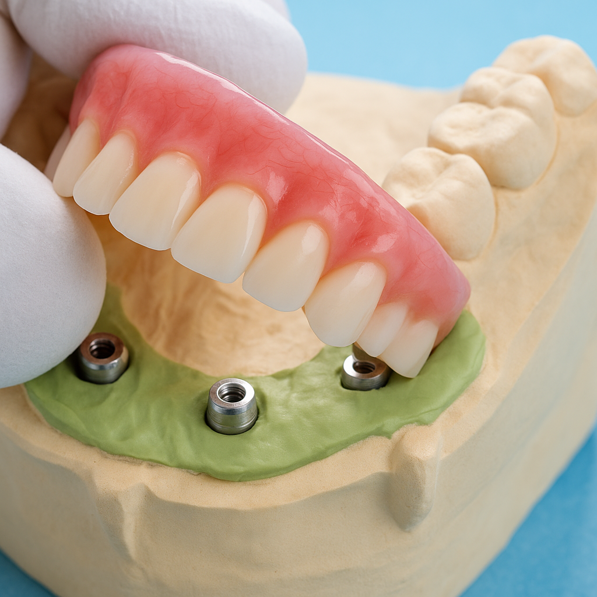
ImplantologieImplantatgetragener Zahnersatz wird mit Zahnimplantaten befestigt und bietet im Vergleich zu herkömmlichem Zahnersatz eine höhere Stabilität.
Mehr lesenGanz gleich, ob Sie in 1200 Wien, den angrenzenden Bezirken 1210, 1020, 1220, 1190 Wien und Klosterneuburg leben oder arbeiten – unsere Zahnarztordination ist in Kürze erreichbar. Unsere Praxis befindet sich im Grenzgebiet dieser Bezirke und ist somit für Patienten aus verschiedenen Teilen Wiens bequem erreichbar.
Patienten aus 1020 Wien (Leopoldstadt) oder 1210 Wien (Floridsdorf) profitieren von der kurzen Distanz – ohne weite Anfahrtswege zu hochwertiger zahnärztlicher Versorgung.
Fortschrittliche Verfahren, ein breites Leistungsspektrum und der Fokus auf Ihr Wohlbefinden – in 1200 Wien, gut erreichbar aus den umliegenden Bezirken.
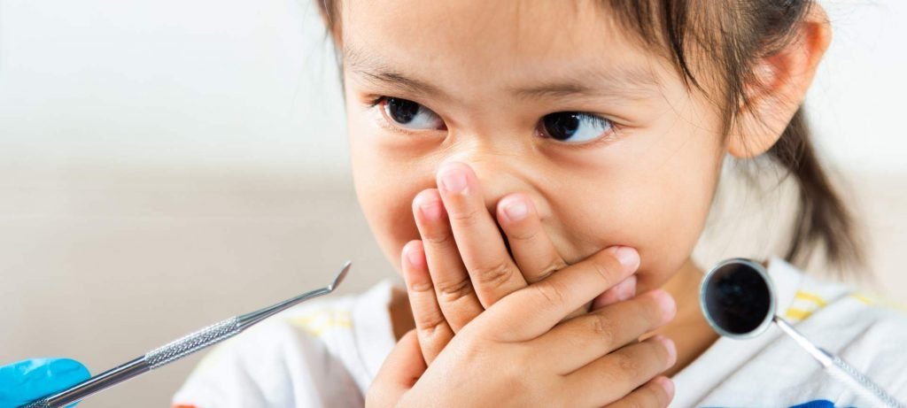
Forsthausgasse im 20. Bezirk – gut erreichbar mit U6, U4, 11A und 5A sowie für Patienten aus 1210, 1020, 1220, 1190 und Klosterneuburg.
Vereinbaren Sie einen Termin online oder kontaktieren Sie uns telefonisch oder per E-Mail.